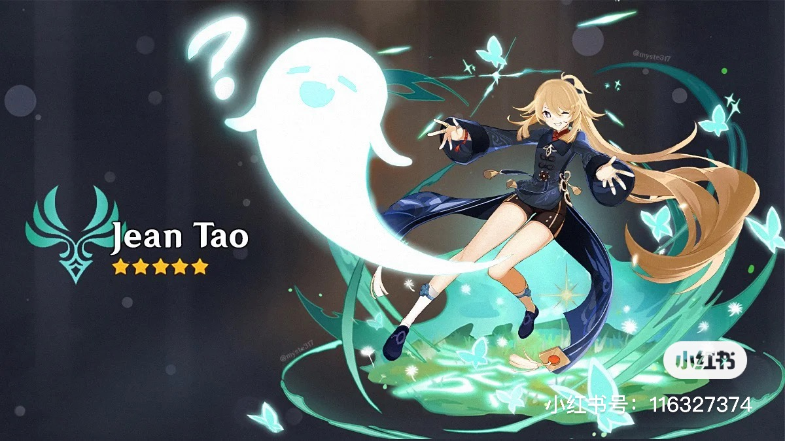

[编者按]“中华民族历来讲求‘天下一家’，主张民胞物与、协和万邦、天下大同，憧憬‘大道之行，天下为公’的美好世界。”千百年来，“世界大同、天下一家”始终是中华民族的理想追求。习近平主席汲取中华优秀传统文化思想精华，多次提及“天下一家”观点，为世界人民求和平、谋发展贡献中国智慧、中国方案。央视网《联播+》推出《天下一家》系列报道，与您一同感受习主席胸怀天下的情怀与担当。
联播+ 当今世界各国面临史所罕见的多种风险挑战，人类社会陷入前所未有的多重安全困境。2022年4月，习近平主席首次提出全球安全倡议，倡导“坚持统筹维护传统领域和非传统领域安全，共同应对地区争端和恐怖主义、气候变化、网络安全、生物安全等全球性问题”。
世界需要什么样的安全理念、各国怎样实现共同安全，已成为摆在所有人面前的时代课题。党的十八大以来，习近平主席在不同场合多次就安全问题发表重要讲话。
（中央广播电视总台央视网）
责任编辑：陈鸡峰